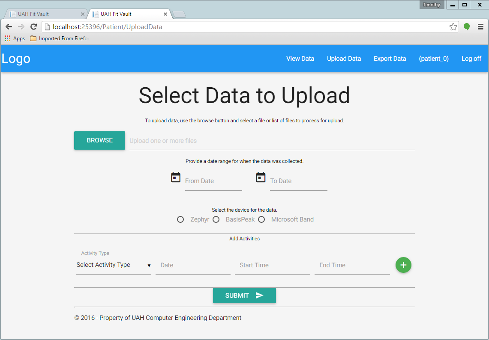

Patient Data Upload¶
Table of Contents
A patient can upload data to the system from 3 types of devices:
- Zephyr
- Basis Peak
- Microsoft Band
To upload a file, login with your patient account credentials. Then, click on the “Upload Data” button at the top right of the page. This should take you to a screen like this:
Click the “BROWSE” button and follow the wizard to the file(s) you want to upload. Fill in the date of collection information and select the device type. At this point you can upload data by clicking the “SUBMIT” button.
Your Physician may also ask you to fill out activities (the second half of the Upload Data page). Activities must be set at the time of the data upload. To fill out an activity simply choose an activity type from the “Activity Type” dropdown, select the date the activity was performed, and select a start and end time for the activity.
You can input as many activities as you want. To add an activity click the green plus button to the right of the activity section of the page.